More signal per call
How many metrics can one
LLM judge score
before it lies?
one call · more and more metrics
01 · the cost structure
A thousand metrics cost 59¢ separately.
Packed together, they cost 32¢.
K means metrics per call. Packing cut observed cost by 46% across 3,599 completed pilot calls.
Jev is the useful alternative. If you need typed decisions rather than generated evidence, evaluate a decision model before optimizing an LLM judge.
Deußer, Sparrenberg & Sifa (2026) · arXiv:2609.37647
02 · the data
Humans already scored
10,681 prompts
Response A
Five scores from 0 to 4
Response B
The same five scores
HelpSteer2: 10,681 prompts · two responses · five human-scored metrics · at least three annotators · dots are illustrative
03 · the first experiment
Change the packing.
Keep the evidence fixed.
5 calls
one metric in each
1 call
all five metrics together
Same prompt, responses, rubric and output budget per metric.
"verbosity": { "quote": "verbatim evidence", "explanation": "one or two sentences", "score": 3 }
src/packing/budget.py headroom = REASONING_HEADROOM_TOKENS if reasoning else 0 content = ENVELOPE_OVERHEAD_TOKENS + PER_CRITERION_OUTPUT_TOKENS * group_size
04 · why this is not obvious
Two hypotheses, both plausible
Packing hurts
Divided attention. One reasoning budget, now five judgements.
Packing helps
Criteria in context. Verbose relative to helpful.
Pre-registered rival: position in the prompt, not how many share the call.
05 · the result
At five metrics,
no measurable loss
+0.5 pts
accuracy change
46% less
cost per metric
No measurable loss. 95% CI −3.4 to +4.3 points. The range crosses zero.
06 · reliability check
Packing did not increase ties
48.00%
one metric per call
47.96%
five metrics per call
The judge was no more indecisive when the metrics shared a call.
07 · what it took to measure this
Anchor every scale point,
or the judge invents a shorter one
The first rubric described 0, 2 and 4. The judge used those values and skipped the rest. Never 1. Never 3.
src/packing/criteria.py missing = points - set(self.anchors) if missing: raise ValueError( f"{self.key}: every scale point needs an anchor; missing {sorted(missing)}. " f"A partially anchored scale becomes the scale -- see module docstring." )
Bars show which values appeared, not their relative frequency.
08 · beyond the human labels
To test past five metrics,
I broke answers on purpose
src/packing/corrupt.py rng = random.Random(seed) picks = [rng.choice(idx) for _ in range(max(1, severity))] rearranged = parts[:] for pick in picks: rearranged[pick] = rearranged[pick].rstrip() + " " + parts[pick].strip()
Every generated pair records: operation + target + direction + seed.
09 · the synthetic experiment
One metric is measured.
The other 39 add load.
src/packing/runner.py for nominal_n in levels: group = (target, *companions[: nominal_n - 1])
- 1 measured target has a known direction.
- 39 load-only metrics make the call larger.
- The target stays first at every rung.
No new human labels. Eight operations contribute 58 prompts each. The outcome is recovery of the known edit.
10 · the extension
At forty metrics,
recovery falls
−6.3 pts
recovery at K = 40
−10.7 to −1.9
95% confidence interval
Position stayed fixed. 7,653 calls · p = 0.0054. Same scale as the five-metric result. This range never reaches zero.
11 · where does it break
It bends.
I couldn’t find a cliff.
exploratory
roughly 1% lower odds per added metric
Zoomed y-axis: 69% to 81% recovery. The bump at K = 5 is sampling variation. A straight trend fits the observed rungs without detectable nonlinearity. Dots are descriptive; the endpoint interval is on the previous slide.
12 · under the average
The average hides
prompts moving both ways
These three operation-level declines survive Holm correction. Operation-specific effect sizes remain exploratory.
13 · the scope
What this experiment
does not prove
- Not a universal limit. One model, one corpus and one rubric.
- Not a pure attention test. Metric count, prompt length and schema size grow together.
- Not forty human labels. One known edit is measured while the other metrics add load.
- Not a position effect. The measured target stays first throughout the ladder.
This is a precise measurement of one production-shaped setup.
14 · the defensible claim
What I will actually claim
- At 5 metrics: no measurable loss, with a 46% observed cost reduction.
- At 40 metrics: recovery was 6.3 points lower.
- Between them: an exploratory fit suggests a gradual decline. I could not detect a cliff.
15 · takeaway
If you run judges in production
- Test a small packed rubric first.
- Retest quality as you add more.
- Anchor every scale point.
- Report the tie rate next to accuracy.
Reproduce it.
Every number here recomputes from retained calls, no API key:
packing reproduce
github.com/sattensil/multi-metric-judge

Scarlett Attensil · LaunchDarkly